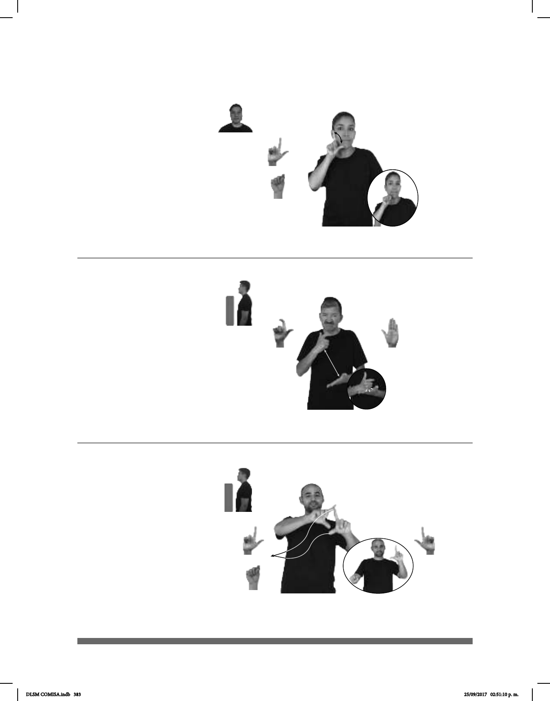

383
(L-128)
Seña: SM
Seña que pasa de
Palma hacia la
izquierda.
Sobre la mejilla.
Los dedos
índice y pulgar se tocan y se sepa-
ran
repetidamente.
adv. En el día siguiente
al de hoy.
Seña: SB
MD seña que pasa
MB L.1
MD y MB palmas
hacia afuera.
MD del hombro al pecho
del lado izquierdo al lado derecho.
MB a la altura del hombro.
La MD sigue una
trayectoria ondulada.
1. adj. Que pertenece a la
nación o se relaciona con ella. 2. País
Seña: SB
MD L.10, MB B-P.2
MD palma hacia adentro
MB palma hacia arriba.
La MD inicia a la altura del
pecho y termina sobre MB. MB a la altura
del abdomen.
La MD golpea la MB en
línea recta repetidamente.
Labios distendidos,
nariz fruncida.
loc. v. Aviso o advertencia de
un daño o mal que se le causará a alguien
como reacción voluntaria a un daño o un
mal que se ha recibido por esa persona.
1
2
(L-129)
Mañana (L-127)
pro-TÚ CUIDAR++ MUCHO MAÑANA NOS-VEMOS
Cuídate mucho, nos vemos mañana.
yo-AVISAR-a-ti ME-LA-VAS-A-PAGAR++
Te aviso, me las vas a pagar.
REPÚBLICA-MEXICANA HABER 31 ESTADOS
En la República Mexicana hay 31 estados.
DLSM COMISA.indb 383 25/09/2017 02:51:10 p. m.